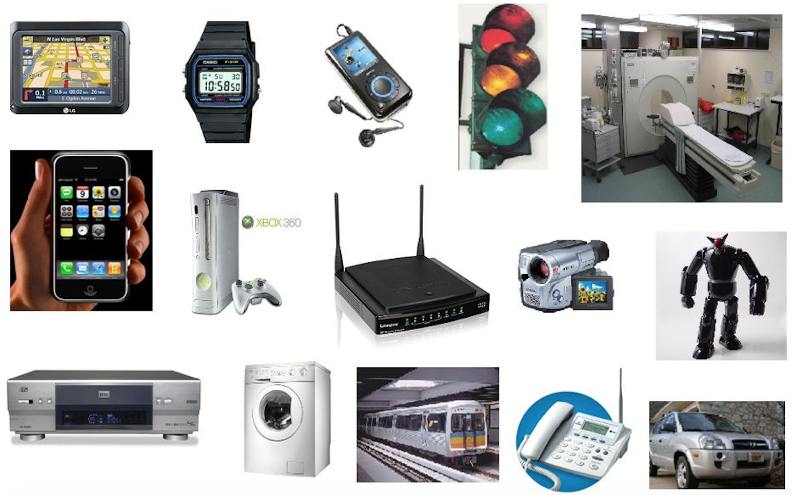

|
ECE 4501/6501, CS 6501 - Fall 2020
Real-time Embedded Systems
Due to the current COVID-19 pandemic, all the course activities will be carried out online.
For the latest updates, please visit UVA's Return to Grounds page.

Source
Embedded systems are special-purpose computers at the core of Cyber-Physical Systems (CPS) that monitor and control the physical processes through real-time interactions with sensors and actuators.
More than 90% of manufactured micro-processors go inside airplanes, automobiles, medical devices, digital cameras, toys, home
appliances, and smart buildings. What are the building blocks of an embedded system?
How can we design an embedded system and make sure it satisfies specific functionality,
reliability, and timing requirements? How can we bridge the gap between the inherently
sequential embedded software with the intrinsic concurrency in the physical world?
How can we execute multiple data acquisition, processing, and control tasks on resource-constrained microcontrollers while satisfying real-time constraints?
This course will help you answer these questions by providing the foundational knowledge and
hands-on experience in design and validation of embedded computing systems, with a focus on
embedded C programming and real-time operating systems (RTOS) for ARM® Cortex™-M
Microcontrollers.
In the second half of the class, we will explore related topics and applications
in safety and security, cyber-physical systems (CPS), internet of things (IoT), and robotics through
paper presentations and discussions.
Topics:
- Embedded system architectures
- Embedded input and output (I/O)
- Serial and parallel I/O
- Interrupts
- Asynchronous vs. synchronous interfaces
- Analog I/O
- Embedded software development
- Embedded C programming
- Memory management
- Toolchains, debugging and profiling
- Real-time operating systems
- Thread and process management
- Interrupt handling
- Real-time scheduling
- Quantitative analysis and validation
|